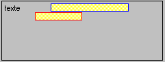
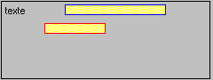

<d>n
Cette commande permet de se déplacer horizontalement.
n est une valeur numérique qui exprimé un pourcentage par rapport à la largeur de l'objet.
Le décalage est uniquement valable pour la ligne en cours.
Exemple :
ff.graph &= "<t>texte"
ff.graph &= "<d>20" ; tout le graphique est décalé de 20%
ff.graph &= '<c>jaune'
ff.graph &= "<cc>bleu"
ff.graph &= "<b>50,0"
ff.graph &= "<s>"
ff.graph &= "<cc>rouge"
ff.graph &= "<b>30;20"

<s>
Cette commande permet de passer à la ligne suivante.
Le caractère | dans un texte permet également de passer à la ligne suivante.
<s>n
Cette commande permet de passer à la ligne suivante en ajoutant n orteils.
ff.graph &= "<t>texte"
ff.graph &= "<d>20"
ff.graph &= '<c>jaune'
ff.graph &= "<cc>bleu"
ff.graph &= "<b>50,0"
ff.graph &= "<s>4" ; ligne suivante + 4 orteils
ff.graph &= "<cc>rouge"
ff.graph &= "<b>30;20"

<e>n
Cette commande permet de préciser la hauteur d'une ligne en orteils.
Par défaut, la hauteur de la ligne correspond à la hauteur du texte le plus grand qui sera affiché sur la ligne.
<v>
Cette commande permet de centrer verticalement l'objet.
Elle doit se trouver avant tout affichage.
Récapitulatif des commandes de l'objet graphique